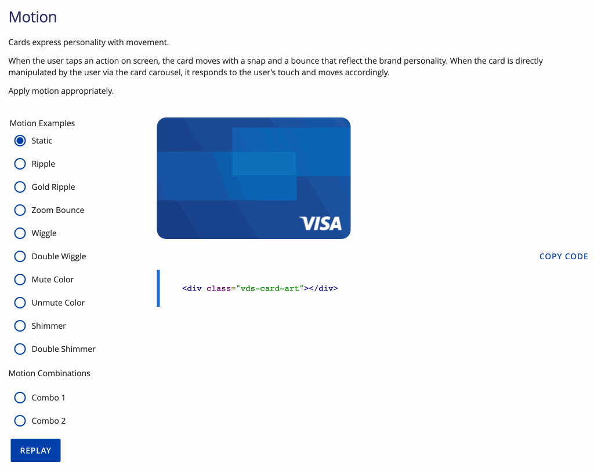
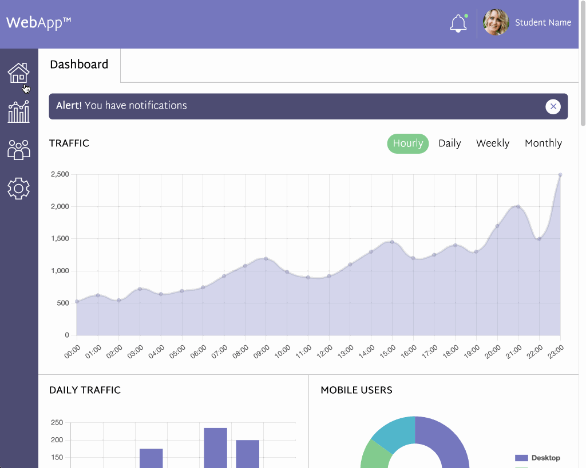
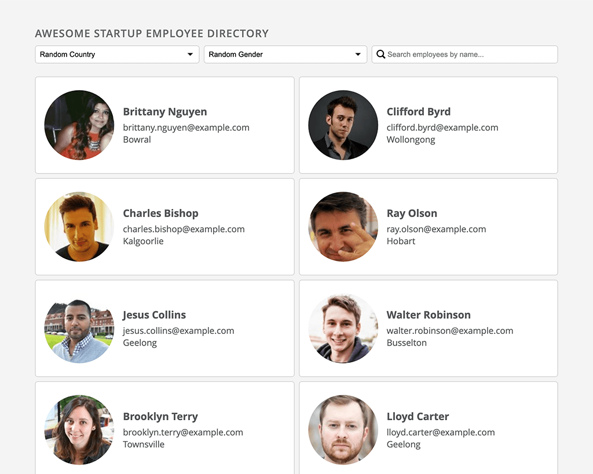
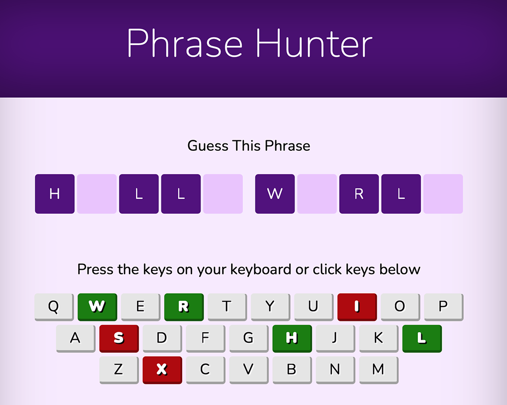
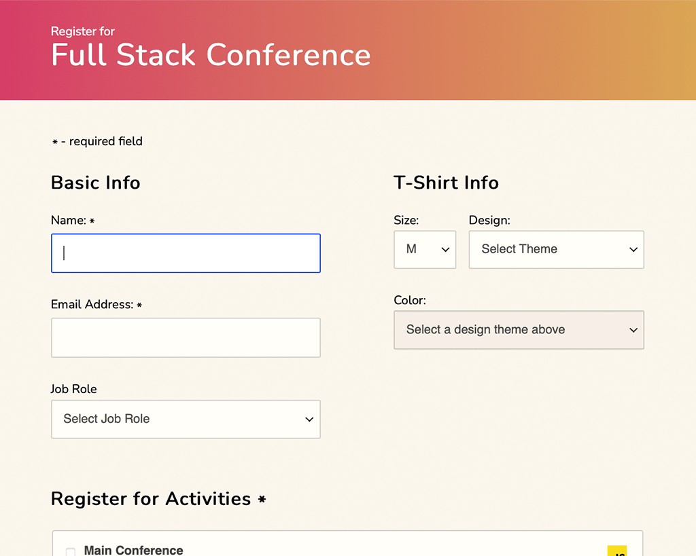
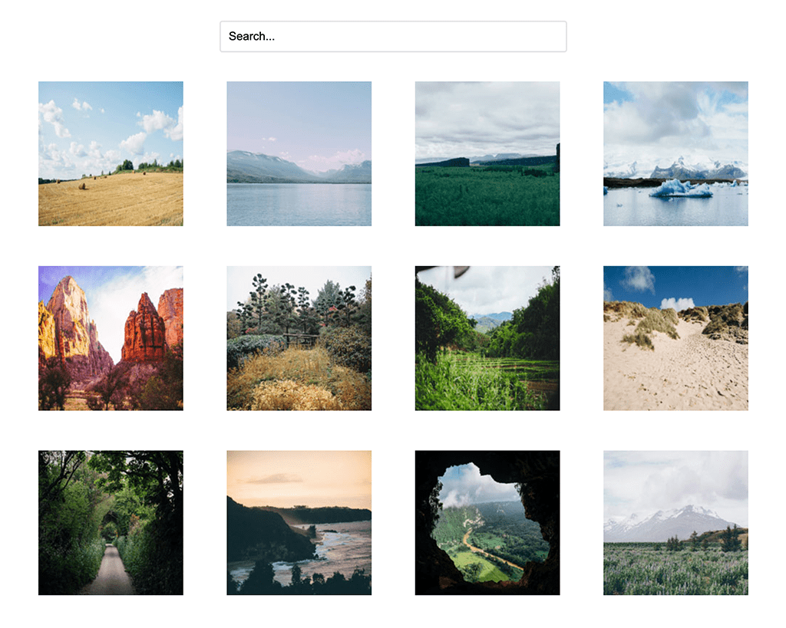
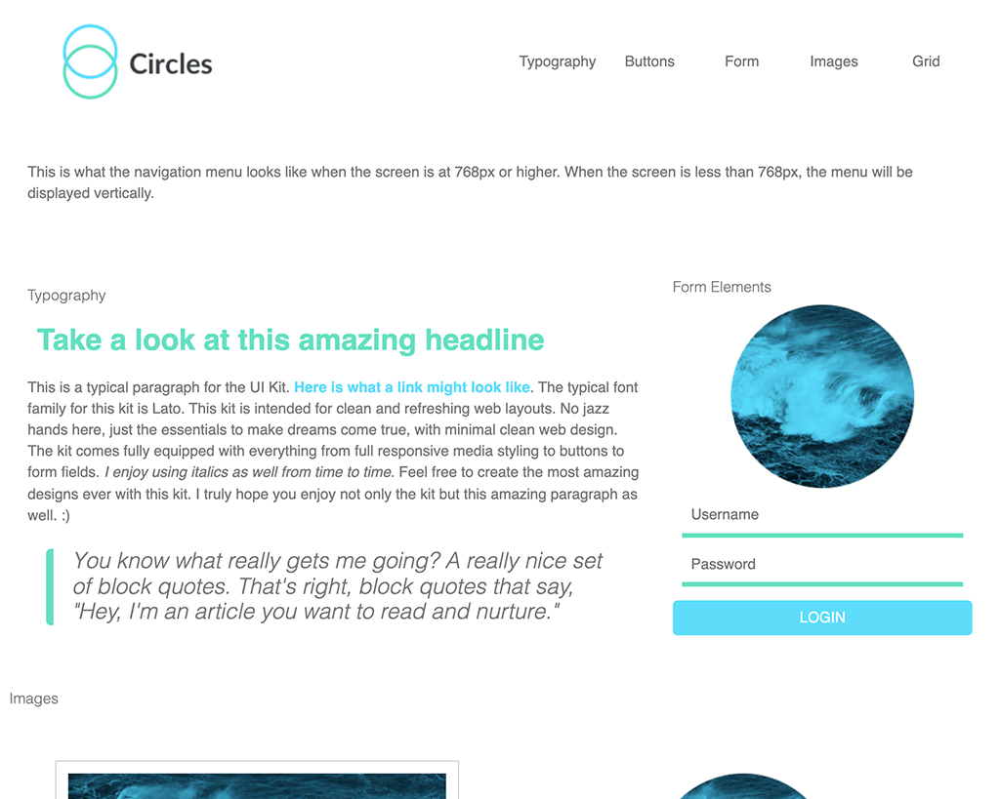
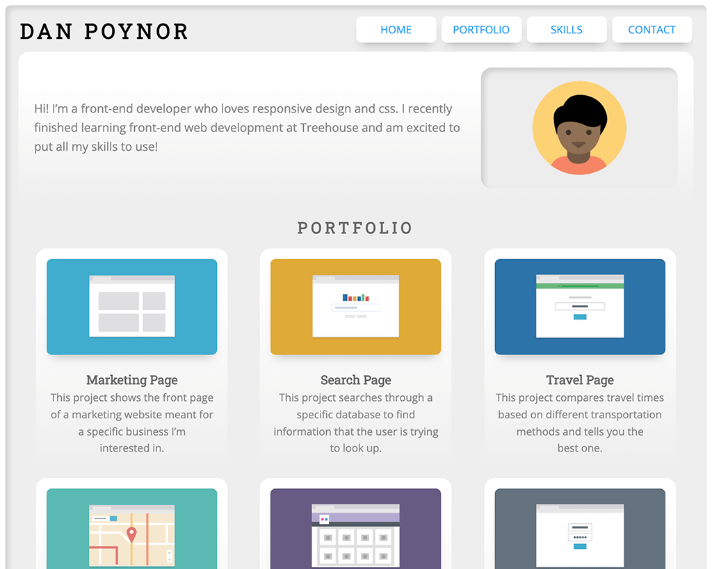

Welcome to my Web Development portfolio! I’m a Web Developer living in Austin, Texas with a passion for building beautiful, easy-to-use websites. Below are a few examples to checkout.
Projects
Thanks for viewing some of my projects. Below you can mark projects that you might want to investigate more later by clicking it’s heart icon to make it a “Favorite”. Each project includes a “Live Preview” link and a link to the source code. If interested in seeing more of my work (such as lots of WordPress and marketing design/dev examples), please visit danpoynor.com or contact me.
1 : Dell Cloud Services SVG Animation
As part of a team of 5, I was responsible for the development of Dell Cloud Services landing page explorations. Based on one of the Figma files received from the UX designer, I created this SVG animation along with other custom SVG icons and the overall page layout.
As part of a team of 5, I was responsible for the development of Dell Cloud Services landing page explorations. Based on one of the Figma files received from the UX designer, I created this SVG animation along with other custom SVG icons and the overall page layout.
As part of the Visa Design System, I created the initial web based VISA card animations. These were then updated based on After Effects and Lottie motion designs to meet brand standards before finalizing and used as a basis for the development of React and Angular components.
As part of the Visa Design System, I created the initial web based VISA card animations. These were then updated based on After Effects and Lottie motion designs to meet brand standards before finalizing and used as a basis for the development of React and Angular components.
View Technology Highlights
HTML :
Semantic HTML5
CSS :
Dart Sass / CSS
Transitions
Transforms
Animations
Keyframes
JavaScript :
Vanilla JavaScript
Graphics :
Vector graphics
Bitmap Graphics
View Links
3 : Social WebApp Dashboard
Responsive interactive dashboard for a web application featuring JavaScript-driven charts and graphs based on the <a href="https://www.chartjs.org/" target="_blank" title="View link in new tab" rel="noopener">Chart.js<svg class="icon-new-tab"><use href="#icon-new-tab"/></svg></a> customizable charting library. Users can view segmented data, messages other users, receive notifications, and save their personal preferences.
Responsive interactive dashboard for a web application featuring JavaScript-driven charts and graphs based on the Chart.js customizable charting library. Users can view segmented data, messages other users, receive notifications, and save their personal preferences.
View Technology Highlights
HTML :
Semantic HTML5
<picture> element
Minimal use of <div> tags
Search input field with autocomplete
CSS :
Latest best practices
Mobile-First Responsive Layout
Transform animations
display: grid layout
No use of display: flex for layout
scroll-behavior: smooth property
inset property
Google Fonts
JavaScript :
Vanilla JavaScript
JSON
LocalStorage
ChartJS
Namespaced Global Variables
Graphics :
SVG icons
Webp images
AVIF images
JPEG images
Accessibility :
:focus-visible pseudo-selector styling for keyboard focus
Once upon a time I use to design and develop a lot of Flash banners. This animated GIF shows a few examples of the banners I created for Yahoo! Note the colors and timing in the animated GIF are not accurate to the original banners.
Once upon a time I use to design and develop a lot of Flash banners. This animated GIF shows a few examples of the banners I created for Yahoo! Note the colors and timing in the animated GIF are not accurate to the original banners.
View Technology Highlights
Graphics :
Vector graphics
Bitmap Graphics
View Links
5 : Yahoo! Animated Flash Banner Examples 2
While working in-house at Yahoo! I created a lot of Flash banners. Since Flash is no longer supported here is an animated GIF that shows a few examples. Note the colors and timing in the animated GIF are not accurate to the original banners.
While working in-house at Yahoo! I created a lot of Flash banners. Since Flash is no longer supported here is an animated GIF that shows a few examples. Note the colors and timing in the animated GIF are not accurate to the original banners.
View Technology Highlights
Graphics :
Vector graphics
Bitmap Graphics
View Links
6 : Employee Directory
This project loads mock employee data from <a href="https://randomuser.me" target="_blank" title="View link in new tab" rel="noopener">randomuser.me API<svg class="icon-new-tab"><use href="#icon-new-tab"/></svg></a> and display it on a web page. Results can be filtered to show employees by country or gender, then they can be searched for by name. Clicking an employees card presents a modal dialog that includes a carousel navigation to view other employees details.
This project loads mock employee data from randomuser.me API and display it on a web page. Results can be filtered to show employees by country or gender, then they can be searched for by name. Clicking an employees card presents a modal dialog that includes a carousel navigation to view other employees details.
View Technology Highlights
HTML :
Semantic HTML5
<dialog> element
::backdrop pseudo-element
No <div> tags
CSS :
Dart Sass / CSS
Mobile-First Responsive Layout
display: grid layout
:invalid pseudo-selector
Google Fonts
JavaScript :
Vanilla JavaScript
JSON
API Data Filtering
Search input pattern checking
Template Literals
Object Destructuring
Fetch API
Dynamically Loaded ES6 Modules
Namespaced Global Variables
Carousel Keyboard Navigation
Architected for automated tree-shaking
Graphics :
SVG icons
Accessibility :
:focus-visible pseudo-selector styling for keyboard focus
A browser version of the “Wheel of Success“ word guessing game. Uses JavaScript and OOP (Object-Oriented Programming) to come up with a random phrase that players try to guess by typing or selecting different letters. Goal is to guess all the letters in the phrase before making five incorrect guesses. This project utilizes <a href="https://animate.style/" target="_blank" title="View link in new tab" rel="noopener">Animate.css<svg class="icon-new-tab"><use href="#icon-new-tab"/></svg></a> to rapidly integrate cross-browser CSS animations into the demo.
A browser version of the “Wheel of Success“ word guessing game. Uses JavaScript and OOP (Object-Oriented Programming) to come up with a random phrase that players try to guess by typing or selecting different letters. Goal is to guess all the letters in the phrase before making five incorrect guesses. This project utilizes Animate.css to rapidly integrate cross-browser CSS animations into the demo.
8 : Interactive Conference Registration Form Prototype
Prototype for a fictional conference demonstrating form validation and error handling using vanilla JavaScript. This demo centers around a JavaScript class created to validate user entered data and present validation error messages (hints) to the user. The class has been developed to receive a set of validation rules to use for validating each field either in real-time as a user interacts with the form, or after the form has been submitted.
Prototype for a fictional conference demonstrating form validation and error handling using vanilla JavaScript. This demo centers around a JavaScript class created to validate user entered data and present validation error messages (hints) to the user. The class has been developed to receive a set of validation rules to use for validating each field either in real-time as a user interacts with the form, or after the form has been submitted.
An interactive, searchable gallery of photos. Photos are hidden or shown based on user search field input. When a user clicks on a thumbnail, the photo displays in a lightbox overlay based on <a href="https://github.com/fancyapps/ui" rel="noopener">Fancyapps Fancybox UI<svg class="icon-new-tab"><use href="#icon-new-tab"/></svg></a> along with "Next" and "Previous" arrows to cycle through photos.
An interactive, searchable gallery of photos. Photos are hidden or shown based on user search field input. When a user clicks on a thumbnail, the photo displays in a lightbox overlay based on Fancyapps Fancybox UI along with "Next" and "Previous" arrows to cycle through photos.
A Sass micro-framework that can be used to quickly prototype websites. This project focuses on using Sass to development with CSS easier and faster by organizing partials and variables in a reusable way.
A Sass micro-framework that can be used to quickly prototype websites. This project focuses on using Sass to development with CSS easier and faster by organizing partials and variables in a reusable way.
Designing web pages that look and function well on multiple screen sizes is an essential skill for a web developer. Using HTML, CSS, and responsive design, I created this mobile-first web page with a layout that adjusts to fit mobile phones, tablets, and desktop displays. The project demonstrates an understanding of responsive design by adjusting to accommodate small, medium, and large screen sizes.
Designing web pages that look and function well on multiple screen sizes is an essential skill for a web developer. Using HTML, CSS, and responsive design, I created this mobile-first web page with a layout that adjusts to fit mobile phones, tablets, and desktop displays. The project demonstrates an understanding of responsive design by adjusting to accommodate small, medium, and large screen sizes.